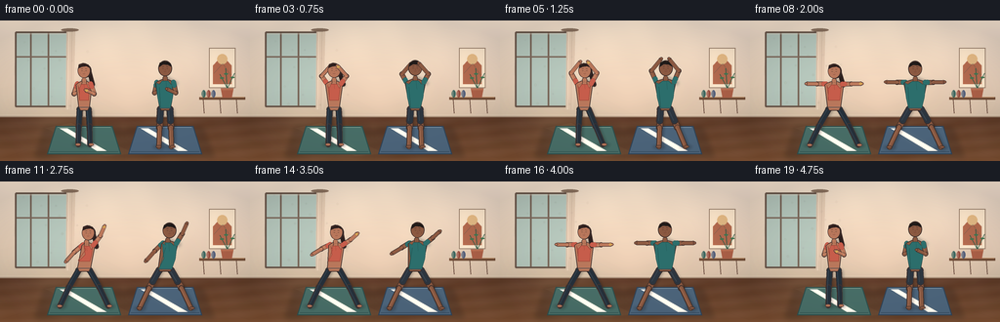
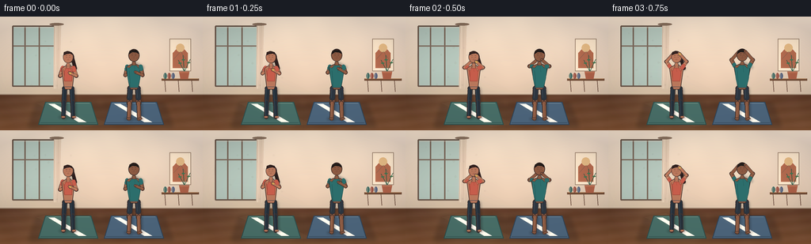
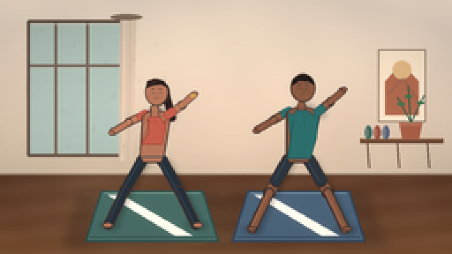
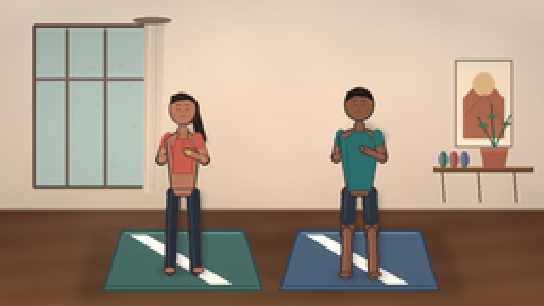
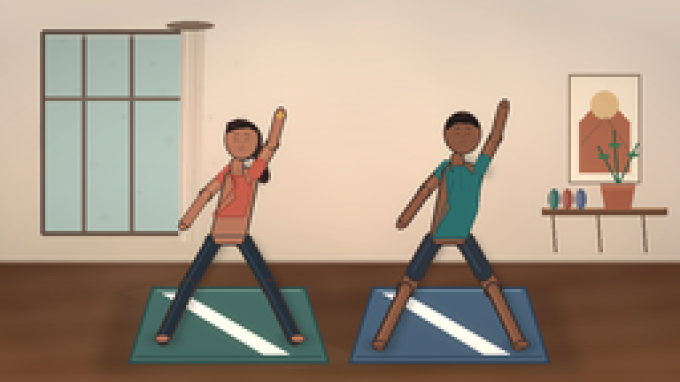
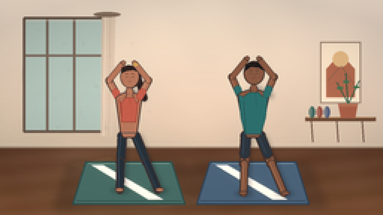
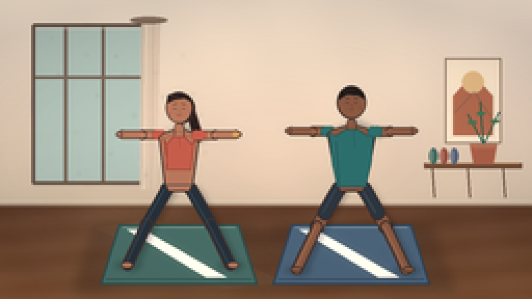
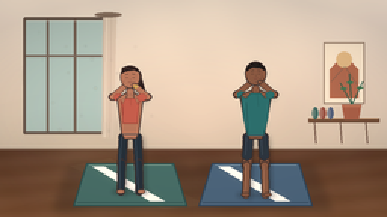
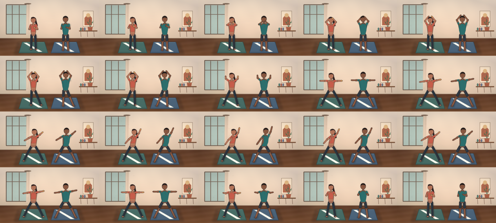

CODING AGENTS AS PIXEL WORLD MODELS
traex/DeepSeek-V4.1-Flash · instance_preservation_0030
点击播放 · 原生 RGB 像素
此结果可播放，但该运行尚未通过最终提交审核。页面展示不代表评测通过。
逐轮保存的候选
回放视频、检查图与代码变化。
每份候选均可单独播放。实际图片检查记录在下方工具轨迹中。
候选 01播放与检查图
点击播放 · 原生 RGB 像素

展开代码变化
--- 上一保存版本
+++ 本次保存版本
@@ -0,0 +1,711 @@
+#!/usr/bin/env python3
+"""Procedural text-to-video renderer for the yoga studio prompt.
+
+The scene is drawn with local geometry and PIL, then supersampled to the
+256x144 delivery size. No external image, model, or rendering engine is used.
+"""
+
+from __future__ import annotations
+
+import math
+from pathlib import Path
+
+import numpy as np
+from PIL import Image, ImageDraw, ImageFilter
+
+import artifact_io
+
+
+CASE_DIR = Path(__file__).resolve().parent
+WIDTH, HEIGHT = 256, 144
+FRAME_COUNT, FPS = 20, 4.0
+SCALE = 4
+HI_W, HI_H = WIDTH * SCALE, HEIGHT * SCALE
+
+
+def rgb(value: str) -> tuple[int, int, int]:
+ value = value.lstrip("#")
+ return tuple(int(value[i : i + 2], 16) for i in (0, 2, 4))
+
+
+def mix(a: tuple[int, int, int], b: tuple[int, int, int], t: float) -> tuple[int, int, int]:
+ return tuple(round(a[i] * (1.0 - t) + b[i] * t) for i in range(3))
+
+
+def sp(point: tuple[float, float]) -> tuple[int, int]:
+ return round(point[0] * SCALE), round(point[1] * SCALE)
+
+
+def sw(value: float) -> int:
+ return max(1, round(value * SCALE))
+
+
+def ellipse(draw: ImageDraw.ImageDraw, box, fill, outline=None, width=1):
+ x0, y0, x1, y1 = box
+ draw.ellipse(
+ (round(x0 * SCALE), round(y0 * SCALE), round(x1 * SCALE), round(y1 * SCALE)),
+ fill=fill,
+ outline=outline,
+ width=sw(width) if outline else 1,
+ )
+
+
+def line(draw: ImageDraw.ImageDraw, points, fill, width=1, joint="curve"):
+ draw.line([sp(p) for p in points], fill=fill, width=sw(width), joint=joint)
+
+
+def polygon(draw: ImageDraw.ImageDraw, points, fill, outline=None, width=1):
+ draw.polygon(
+ [sp(p) for p in points],
+ fill=fill,
+ outline=outline,
+ width=sw(width) if outline else 1,
+ )
+
+
+def capsule(
+ draw: ImageDraw.ImageDraw,
+ p0: tuple[float, float],
+ p1: tuple[float, float],
+ width: float,
+ fill,
+ outline=None,
+ outline_width: float = 0.65,
+) -> None:
+ if outline is not None:
+ line(draw, [p0, p1], outline, width + outline_width * 2)
+ r = width * 0.5 + outline_width
+ ellipse(draw, (p0[0] - r, p0[1] - r, p0[0] + r, p0[1] + r), outline)
+ ellipse(draw, (p1[0] - r, p1[1] - r, p1[0] + r, p1[1] + r), outline)
+ line(draw, [p0, p1], fill, width)
+ r = width * 0.5
+ ellipse(draw, (p0[0] - r, p0[1] - r, p0[0] + r, p0[1] + r), fill)
+ ellipse(draw, (p1[0] - r, p1[1] - r, p1[0] + r, p1[1] + r), fill)
+
+
+def add(a, b):
+ return a[0] + b[0], a[1] + b[1]
+
+
+def sub(a, b):
+ return a[0] - b[0], a[1] - b[1]
+
+
+def mul(a, factor):
+ return a[0] * factor, a[1] * factor
+
+
+def lerp(a, b, t):
+ return a[0] * (1.0 - t) + b[0] * t, a[1] * (1.0 - t) + b[1] * t
+
+
+def smoothstep(t: float) -> float:
+ t = min(1.0, max(0.0, t))
+ return 0.5 - 0.5 * math.cos(math.pi * t)
+
+
+# Joint positions are local to the pelvis, with +y pointing toward the floor.
+POSE_PRAYER = {
+ "pelvis": (0.0, 0.0),
+ "neck": (0.0, -31.5),
+ "head": (0.0, -41.0),
+ "shoulder_l": (-7.0, -27.0),
+ "shoulder_r": (7.0, -27.0),
+ "elbow_l": (-10.5, -16.5),
+ "elbow_r": (10.5, -16.5),
+ "wrist_l": (-2.7, -20.0),
+ "wrist_r": (2.7, -20.0),
+ "hip_l": (-4.7, 0.0),
+ "hip_r": (4.7, 0.0),
+ "knee_l": (-5.7, 18.0),
+ "knee_r": (5.7, 18.0),
+ "ankle_l": (-6.2, 37.0),
+ "ankle_r": (6.2, 37.0),
+}
+
+POSE_OVERHEAD = {
+ "pelvis": (0.0, 0.0),
+ "neck": (0.0, -32.0),
+ "head": (0.0, -41.5),
+ "shoulder_l": (-7.5, -27.5),
+ "shoulder_r": (7.5, -27.5),
+ "elbow_l": (-13.5, -38.5),
+ "elbow_r": (13.5, -38.5),
+ "wrist_l": (-4.5, -49.5),
+ "wrist_r": (4.5, -49.5),
+ "hip_l": (-4.7, 0.0),
+ "hip_r": (4.7, 0.0),
+ "knee_l": (-5.7, 18.0),
+ "knee_r": (5.7, 18.0),
+ "ankle_l": (-6.2, 37.0),
+ "ankle_r": (6.2, 37.0),
+}
+
+POSE_WARRIOR = {
+ "pelvis": (0.0, -0.7),
+ "neck": (0.0, -31.0),
+ "head": (0.0, -40.5),
+ "shoulder_l": (-8.5, -27.0),
+ "shoulder_r": (8.5, -27.0),
+ "elbow_l": (-18.0, -27.0),
+ "elbow_r": (18.0, -27.0),
+ "wrist_l": (-28.0, -27.2),
+ "wrist_r": (28.0, -27.2),
+ "hip_l": (-6.0, 0.0),
+ "hip_r": (6.0, 0.0),
+ "knee_l": (-16.0, 17.5),
+ "knee_r": (16.0, 17.5),
+ "ankle_l": (-25.5, 37.5),
+ "ankle_r": (25.5, 37.5),
+}
+
+POSE_REVERSE = {
+ "pelvis": (0.0, -0.4),
+ "neck": (3.0, -30.5),
+ "head": (5.0, -39.5),
+ "shoulder_l": (0.5, -27.2),
+ "shoulder_r": (10.0, -26.5),
+ "elbow_l": (-9.0, -18.0),
+ "elbow_r": (17.0, -38.0),
+ "wrist_l": (-17.0, -7.0),
+ "wrist_r": (20.0, -49.0),
+ "hip_l": (-6.0, 0.0),
+ "hip_r": (6.0, 0.0),
+ "knee_l": (-16.0, 17.5),
+ "knee_r": (16.0, 17.5),
+ "ankle_l": (-25.5, 37.5),
+ "ankle_r": (25.5, 37.5),
+}
+
+POSE_STEP_RIGHT = dict(POSE_OVERHEAD)
+POSE_STEP_RIGHT.update(
+ {
+ "neck": (0.4, -31.8),
+ "head": (0.6, -41.3),
+ "knee_r": (12.0, 17.8),
+ "ankle_r": (20.0, 37.0),
+ }
+)
+
+POSE_STEP_LEFT = dict(POSE_OVERHEAD)
+POSE_STEP_LEFT.update(
+ {
+ "neck": (-0.4, -31.8),
+ "head": (-0.6, -41.3),
+ "knee_l": (-12.0, 17.8),
+ "ankle_l": (-20.0, 37.0),
+ }
+)
+
+KEY_POSES = [
+ (0, POSE_PRAYER),
+ (4, POSE_OVERHEAD),
+ (5, POSE_STEP_RIGHT),
+ (6, POSE_STEP_LEFT),
+ (8, POSE_WARRIOR),
+ (12, POSE_REVERSE),
+ (16, POSE_WARRIOR),
+ (19, POSE_PRAYER),
+]
+
+
+def interpolate_pose(frame: int) -> dict[str, tuple[float, float]]:
+ for (f0, p0), (f1, p1) in zip(KEY_POSES[:-1], KEY_POSES[1:]):
+ if f0 <= frame <= f1:
+ t = smoothstep((frame - f0) / max(1, f1 - f0))
+ result = {key: lerp(p0[key], p1[key], t) for key in p0}
+ # Add a small foot lift while the stance changes from narrow to wide.
+ if f0 == 4 and frame <= 6:
+ lift = 1.8 * math.sin(math.pi * t)
+ result["ankle_r"] = (result["ankle_r"][0], result["ankle_r"][1] - lift)
+ result["knee_r"] = (result["knee_r"][0], result["knee_r"][1] - lift * 0.45)
+ if f0 == 5 and frame <= 7:
+ lift = 1.6 * math.sin(math.pi * t)
+ result["ankle_l"] = (result["ankle_l"][0], result["ankle_l"][1] - lift)
+ result["knee_l"] = (result["knee_l"][0], result["knee_l"][1] - lift * 0.45)
+ return result
+ return dict(KEY_POSES[-1][1])
+
+
+def add_breath(pose: dict[str, tuple[float, float]], frame: int, figure_index: int):
+ t = frame / FRAME_COUNT
+ phase = 2.0 * math.pi * t + figure_index * 0.55
+ rise = 0.22 * math.sin(phase)
+ sway = 0.13 * math.sin(phase - 0.8)
+ pose = {key: (value[0], value[1]) for key, value in pose.items()}
+ for key in ("neck", "head", "shoulder_l", "shoulder_r"):
+ x, y = pose[key]
+ pose[key] = (x + sway, y + rise)
+ pose["elbow_l"] = add(pose["elbow_l"], (-0.08 * math.sin(phase), rise * 0.45))
+ pose["elbow_r"] = add(pose["elbow_r"], (0.08 * math.sin(phase), rise * 0.45))
+ pose["wrist_l"] = add(pose["wrist_l"], (-0.12 * math.sin(phase), rise * 0.65))
+ pose["wrist_r"] = add(pose["wrist_r"], (0.12 * math.sin(phase), rise * 0.65))
+ return pose
+
+
+def floor_base() -> Image.Image:
+ """Build the static studio background at supersampled resolution."""
+ yy, xx = np.mgrid[0:HI_H, 0:HI_W].astype(np.float32)
+ horizon = 98.0 * SCALE
+ wall_top = np.array([244.0, 235.0, 222.0], dtype=np.float32)
+ wall_bottom = np.array([218.0, 199.0, 177.0], dtype=np.float32)
+ wall_t = np.clip(yy / horizon, 0.0, 1.0)[..., None]
+ image = wall_top * (1.0 - wall_t) + wall_bottom * wall_t
+
+ # Soft hand-painted wall texture, with a slightly cooler shadow at the right.
+ image += (
+ np.sin(xx * 0.014 + yy * 0.021) * 1.2
+ + np.sin(xx * 0.037 - yy * 0.017) * 0.8
+ )[..., None]
+ image[..., 2] += np.clip((xx - HI_W * 0.68) / HI_W, 0, 1) * 7.0
+
+ floor_mask = yy >= horizon
+ depth = np.clip((yy - horizon) / (HI_H - horizon), 0.0, 1.0)
+ near = np.array([143.0, 94.0, 61.0], dtype=np.float32)
+ far = np.array([104.0, 67.0, 47.0], dtype=np.float32)
+ floor = far * (1.0 - depth[..., None]) + near * depth[..., None]
+ floor += (
+ np.sin(yy * 0.12 + xx * 0.012) * 3.0
+ + np.sin(xx * 0.044 - yy * 0.018) * 1.5
+ )[..., None]
+ image[floor_mask] = floor[floor_mask]
+ image = np.clip(image, 0, 255).astype(np.uint8)
+ base = Image.fromarray(image, "RGB")
+ draw = ImageDraw.Draw(base, "RGBA")
+
+ # Plank seams: closer rows are farther apart, matching the low camera.
+ y = 98.0
+ step = 2.2
+ while y < HEIGHT + 3:
+ line(draw, [(0, y), (WIDTH, y)], (78, 51, 38, 35), width=0.35)
+ y += step
+ step *= 1.24
+ vx, vy = 128.0, 98.0
+ for bx in (-18, 30, 78, 127, 177, 225, 274):
+ line(draw, [(vx, vy), (bx, HEIGHT + 4)], (72, 45, 33, 22), width=0.28)
+
+ # Baseboard and its warm reflected edge.
+ polygon(draw, [(0, 97.2), (WIDTH, 97.2), (WIDTH, 99.0), (0, 99.0)], (181, 159, 137, 255))
+ line(draw, [(0, 97.2), (WIDTH, 97.2)], (237, 222, 203, 210), width=0.7)
+ line(draw, [(0, 99.0), (WIDTH, 99.0)], (103, 75, 58, 130), width=0.35)
+
+ # Tall studio window on the left.
+ wx0, wy0, wx1, wy1 = 16.0, 12.0, 69.0, 88.0
+ ellipse(draw, (wx0 - 1.2, wy0 - 1.0, wx1 + 1.5, wy1 + 1.0), (110, 90, 76, 30))
+ polygon(draw, [(wx0, wy0), (wx1, wy0), (wx1, wy1), (wx0, wy1)], (185, 205, 198, 255))
+ # Window glass has a cool vertical gradient and a few soft reflected bands.
+ glass_top = np.array([208, 230, 222], dtype=np.float32)
+ glass_bottom = np.array([143, 183, 177], dtype=np.float32)
+ gy0, gy1 = round(wy0 * SCALE), round(wy1 * SCALE)
+ gx0, gx1 = round(wx0 * SCALE), round(wx1 * SCALE)
+ strip = base.crop((gx0, gy0, gx1, gy1))
+ strip_arr = np.asarray(strip).astype(np.float32)
+ local_y = np.linspace(0.0, 1.0, strip_arr.shape[0])[:, None, None]
+ strip_arr = glass_top * (1.0 - local_y) + glass_bottom * local_y
+ strip_arr += (np.sin(np.arange(strip_arr.shape[1])[None, :, None] * 0.07) * 3.0)
+ strip_arr = np.clip(strip_arr, 0, 255).astype(np.uint8)
+ base.paste(Image.fromarray(strip_arr, "RGB"), (gx0, gy0))
+ draw = ImageDraw.Draw(base, "RGBA")
+ for x in (31.5, 49.5):
+ polygon(draw, [(x - 0.75, wy0), (x + 0.75, wy0), (x + 0.75, wy1), (x - 0.75, wy1)], (128, 109, 94, 255))
+ polygon(draw, [(wx0, 36.5), (wx1, 36.5), (wx1, 37.8), (wx0, 37.8)], (132, 112, 97, 255))
+ # Window casing.
+ line(draw, [(wx0, wy0), (wx1, wy0), (wx1, wy1), (wx0, wy1), (wx0, wy0)], (111, 91, 77, 255), width=1.7)
+ line(draw, [(wx0 + 1.5, wy0 + 1.5), (wx1 - 1.5, wy0 + 1.5)], (241, 231, 216, 220), width=0.55)
+
+ # Linen curtain gathered on the right side of the window.
+ polygon(draw, [(68.0, 9.5), (77.0, 10.5), (75.0, 91.5), (67.2, 91.0)], (223, 205, 185, 235))
+ line(draw, [(70.0, 10.5), (69.0, 91.0)], (247, 233, 214, 160), width=1.0)
+ line(draw, [(73.4, 10.8), (72.4, 91.0)], (183, 161, 141, 95), width=0.55)
+ ellipse(draw, (62.5, 8.0, 80.5, 11.3), (142, 119, 100, 255))
+
+ # Abstract framed arch, right of center, keeps the wall from feeling empty.
+ ax0, ay0, ax1, ay1 = 214.0, 28.0, 241.0, 69.0
+ polygon(draw, [(ax0, ay0), (ax1, ay0), (ax1, ay1), (ax0, ay1)], (246, 235, 217, 255), (147, 124, 104, 255), 0.8)
+ polygon(draw, [(ax0 + 4.0, ay1 - 4.0), (ax0 + 4.0, ay0 + 18.0), (ax0 + 13.5, ay0 + 8.0), (ax1 - 4.0, ay0 + 18.0), (ax1 - 4.0, ay1 - 4.0)], (185, 112, 84, 255))
+ ellipse(draw, (ax0 + 8.2, ay0 + 6.2, ax0 + 18.8, ay0 + 16.8), (229, 193, 142, 255))
+ line(draw, [(ax0 + 5.0, ay1 - 15.0), (ax0 + 14.0, ay1 - 25.0), (ax1 - 5.0, ay1 - 13.0)], (93, 91, 82, 110), width=0.45)
+
+ # Low slatted shelf with a plant and rolled mats.
+ polygon(draw, [(204.0, 78.5), (251.0, 78.5), (251.0, 81.0), (204.0, 81.0)], (118, 82, 59, 255))
+ line(draw, [(205.0, 78.5), (250.0, 78.5)], (204, 157, 115, 220), width=0.65)
+ for sx in (208.0, 225.0, 242.0):
+ line(draw, [(sx, 81.0), (sx + 1.0, 95.0)], (101, 70, 53, 255), width=0.8)
+ # Plant pot.
+ polygon(draw, [(226.0, 69.5), (239.0, 69.5), (237.3, 79.0), (227.8, 79.0)], (178, 102, 76, 255))
+ line(draw, [(226.8, 70.5), (238.2, 70.5)], (223, 157, 120, 190), width=0.55)
+ for stem, tip in [((232.5, 69.0), (225.0, 55.0)), ((232.5, 69.0), (231.0, 49.0)), ((233.0, 69.0), (240.0, 54.0))]:
+ line(draw, [stem, tip], (50, 94, 71, 255), width=0.75)
+ leaf_center = lerp(stem, tip, 0.72)
+ ellipse(draw, (leaf_center[0] - 2.2, leaf_center[1] - 0.8, leaf_center[0] + 2.2, leaf_center[1] + 0.8), (75, 124, 86, 255))
+ # Rolled mats.
+ for x, color in [(208.0, (70, 111, 102)), (213.0, (160, 86, 70)), (218.0, (91, 104, 129))]:
+ ellipse(draw, (x - 1.5, 71.2, x + 2.6, 78.8), color)
+ ellipse(draw, (x - 0.8, 72.0, x + 0.1, 78.0), (226, 210, 190, 110))
+
+ # Sunlit floor patch and a soft window shaft.
+ glow = Image.new("RGBA", (HI_W, HI_H), (0, 0, 0, 0))
+ gd = ImageDraw.Draw(glow, "RGBA")
+ polygon(gd, [(20, 88), (66, 88), (160, 141), (63, 143)], (255, 222, 155, 38))
+ polygon(gd, [(8, 88), (40, 88), (91, 143), (43, 143)], (255, 233, 178, 22))
+ glow = glow.filter(ImageFilter.GaussianBlur(13 * SCALE))
+ base = Image.alpha_composite(base.convert("RGBA"), glow).convert("RGB")
+ draw = ImageDraw.Draw(base, "RGBA")
+ polygon(draw, [(46, 110), (73, 105), (137, 136), (108, 139)], (255, 229, 172, 13))
+
+ # Static vignette baked into the background.
+ arr = np.asarray(base).astype(np.float32)
+ nx = (xx / (HI_W - 1.0) - 0.5) * 2.0
+ ny = (yy / (HI_H - 1.0) - 0.5) * 2.0
+ vignette = 1.0 - 0.11 * np.clip((nx * nx * 0.55 + ny * ny * 0.85), 0.0, 1.0)
+ arr *= vignette[..., None]
+ return Image.fromarray(np.clip(arr, 0, 255).astype(np.uint8), "RGB")
+
+
+def draw_mats(base: Image.Image) -> None:
+ shadow_layer = Image.new("RGBA", base.size, (0, 0, 0, 0))
+ sd = ImageDraw.Draw(shadow_layer, "RGBA")
+ for center in (86.0, 169.0):
+ polygon(sd, [(center - 40, 109), (center + 38, 109), (center + 50, 140), (center - 50, 140)], (44, 31, 25, 70))
+ shadow_layer = shadow_layer.filter(ImageFilter.GaussianBlur(2.8 * SCALE))
+ base.alpha_composite(shadow_layer)
+
+ draw = ImageDraw.Draw(base, "RGBA")
+ for center, top_color, edge_color, accent in [
+ (86.0, (75, 112, 104, 255), (49, 81, 77, 255), (143, 174, 156, 210)),
+ (169.0, (79, 103, 124, 255), (51, 70, 88, 255), (142, 166, 181, 205)),
+ ]:
+ top = [(center - 29, 108.0), (center + 29, 108.0), (center + 38, 137.0), (center - 38, 137.0)]
+ polygon(draw, top, top_color, edge_color, 0.9)
+ line(draw, [(center - 27.0, 109.3), (center + 27.0, 109.3)], accent, width=0.55)
+ line(draw, [(center - 35.0, 134.3), (center + 35.0, 134.3)], edge_color, width=0.38)
+ # A restrained diagonal sheen suggests a textured, wipeable mat.
+ polygon(draw, [(center - 25, 110.5), (center - 17, 110.5), (center + 23, 133.5), (center + 13, 133.5)], (255, 255, 255, 9))
+
+
+FIGURE_WOMAN = {
+ "center": (86.0, 91.0),
+ "skin": rgb("#B8795D"),
+ "skin_light": rgb("#D49A78"),
+ "skin_dark": rgb("#8D5846"),
+ "hair": rgb("#2D211F"),
+ "hair_light": rgb("#5B3C31"),
+ "top": rgb("#C65F4D"),
+ "top_dark": rgb("#9D4639"),
+ "pants": rgb("#29333B"),
+ "pants_light": rgb("#3B4852"),
+ "outline": rgb("#47352F"),
+ "scale": 0.97,
+ "shoulder_extra": 0.0,
+ "ponytail": True,
+}
+
+FIGURE_MAN = {
+ "center": (169.0, 91.0),
+ "skin": rgb("#8C5B43"),
+ "skin_light": rgb("#AB775B"),
+ "skin_dark": rgb("#68402F"),
+ "hair": rgb("#201C1A"),
+ "hair_light": rgb("#47362E"),
+ "top": rgb("#2F706C"),
+ "top_dark": rgb("#245653"),
+ "pants": rgb("#303840"),
+ "pants_light": rgb("#46515A"),
+ "outline": rgb("#3F302B"),
+ "scale": 1.03,
+ "shoulder_extra": 1.3,
+ "ponytail": False,
+}
+
+
+def figure_points(pose, figure, frame, index):
+ pose = add_breath(pose, frame, index)
+ cx, cy = figure["center"]
+ scale = figure["scale"]
+ result = {}
+ for key, point in pose.items():
+ result[key] = (cx + point[0] * scale, cy + point[1] * scale)
+ # Broaden the man's upper body slightly without disturbing limb anchors.
+ if figure["shoulder_extra"]:
+ for key in ("shoulder_l", "shoulder_r"):
+ x, y = result[key]
+ direction = -1.0 if key.endswith("_l") else 1.0
+ result[key] = (x + direction * figure["shoulder_extra"] * scale, y)
+ return result
+
+
+def draw_shadow(base: Image.Image, pts, figure) -> None:
+ layer = Image.new("RGBA", base.size, (0, 0, 0, 0))
+ d = ImageDraw.Draw(layer, "RGBA")
+ color = (35, 27, 23, 72)
+ for a, b in [
+ ("hip_l", "knee_l"),
+ ("knee_l", "ankle_l"),
+ ("hip_r", "knee_r"),
+ ("knee_r", "ankle_r"),
+ ("neck", "shoulder_l"),
+ ("neck", "shoulder_r"),
+ ]:
+ capsule(d, add(pts[a], (2.4, 1.0)), add(pts[b], (2.4, 1.0)), 4.2, color)
+ ellipse(d, (pts["ankle_l"][0] - 6, pts["ankle_l"][1] - 1.2, pts["ankle_l"][0] + 7, pts["ankle_l"][1] + 1.8), color)
+ ellipse(d, (pts["ankle_r"][0] - 6, pts["ankle_r"][1] - 1.2, pts["ankle_r"][0] + 7, pts["ankle_r"][1] + 1.8), color)
+ layer = layer.filter(ImageFilter.GaussianBlur(1.4 * SCALE))
+ base.alpha_composite(layer)
+
+
+def draw_leg(draw, pts, figure, side: str, is_woman: bool) -> None:
+ hip = pts[f"hip_{side}"]
+ knee = pts[f"knee_{side}"]
+ ankle = pts[f"ankle_{side}"]
+ outline = figure["outline"]
+ if is_woman:
+ capsule(draw, hip, knee, 5.2, figure["pants"], outline)
+ capsule(draw, knee, ankle, 4.4, figure["pants"], outline)
+ line(draw, [add(hip, (-1.25, 0)), add(knee, (-1.15, 0)), add(ankle, (-0.85, -0.5))], figure["pants_light"], width=0.65)
+ else:
+ capsule(draw, hip, knee, 5.5, figure["skin"], outline)
+ capsule(draw, knee, ankle, 4.1, figure["skin"], outline)
+ # Shorts cover the upper thigh, leaving a clearly bare lower leg.
+ thigh_mid = lerp(hip, knee, 0.63)
+ capsule(draw, hip, thigh_mid, 6.0, figure["pants"], outline)
+ line(draw, [add(hip, (-1.3, 0)), add(thigh_mid, (-1.2, 0))], figure["pants_light"], width=0.55)
+ line(draw, [add(knee, (-1.0, 0)), add(ankle, (-0.8, 0))], figure["skin_light"], width=0.55)
+ foot_dir = -1 if side == "l" else 1
+ ellipse(
+ draw,
+ (ankle[0] - 2.3 + foot_dir * 0.7, ankle[1] - 1.3, ankle[0] + 3.3 + foot_dir * 0.7, ankle[1] + 1.5),
+ figure["skin"],
+ outline,
+ 0.45,
+ )
+
+
+def draw_torso(draw, pts, figure, is_woman: bool) -> None:
+ neck = pts["neck"]
+ pelvis = pts["pelvis"]
+ sl, sr = pts["shoulder_l"], pts["shoulder_r"]
+ hl, hr = pts["hip_l"], pts["hip_r"]
+ torso = [
+ (sl[0] - 1.7, sl[1] + 1.0),
+ (sl[0] + 0.8, sl[1] - 1.3),
+ (neck[0] - 2.4, neck[1] + 1.0),
+ (neck[0] + 2.4, neck[1] + 1.0),
+ (sr[0] - 0.8, sr[1] - 1.3),
+ (sr[0] + 1.7, sr[1] + 1.0),
+ (hr[0] + 1.1, hr[1] - 2.5),
+ (hr[0] - 0.5, hr[1] + 1.2),
+ (hl[0] + 0.5, hl[1] + 1.2),
+ (hl[0] - 1.1, hl[1] - 2.5),
+ ]
+ polygon(draw, torso, figure["skin"], figure["outline"], 0.7)
+
+ # Neck and collarbone cues.
+ capsule(draw, (neck[0], neck[1] + 0.4), (neck[0], neck[1] + 4.2), 4.0, figure["skin"], figure["outline"], 0.45)
+ line(draw, [add(sl, (2.0, 1.4)), (neck[0], neck[1] + 2.1), add(sr, (-2.0, 1.4))], figure["skin_dark"], width=0.35)
+
+ if is_woman:
+ # Fitted sports top and a short bare midriff.
+ top = [
+ (sl[0] + 0.5, sl[1] + 0.7),
+ (sl[0] + 2.0, sl[1] + 4.6),
+ (neck[0] - 3.0, neck[1] + 4.8),
+ (neck[0] + 3.0, neck[1] + 4.8),
+ (sr[0] - 2.0, sr[1] + 4.6),
+ (sr[0] - 0.5, sr[1] + 0.7),
+ (sr[0] - 1.8, sr[1] + 10.2),
+ (hr[0] + 0.3, hr[1] - 9.2),
+ (hl[0] - 0.3, hl[1] - 9.2),
+ (sl[0] + 1.8, sl[1] + 10.2),
+ ]
+ polygon(draw, top, figure["top"], figure["top_dark"], 0.45)
+ line(draw, [(sl[0] + 2.2, sl[1] + 5.2), (hl[0] - 0.4, hl[1] - 10.0)], figure["top_dark"], width=0.38)
+ line(draw, [(neck[0], neck[1] + 5.0), (neck[0] + 0.4, neck[1] + 9.6)], figure["top_dark"], width=0.35)
+ # Waistband.
+ line(draw, [(hl[0] - 1.0, hl[1] - 2.3), (hr[0] + 1.0, hr[1] - 2.3)], figure["pants_light"], width=0.55)
+ else:
+ # Sleeveless training tank, slightly tapered at the waist.
+ top = [
+ (sl[0] - 0.8, sl[1] + 0.2),
+ (sl[0] + 2.5, sl[1] + 2.0),
+ (neck[0] - 3.3, neck[1] + 3.2),
+ (neck[0] + 3.3, neck[1] + 3.2),
+ (sr[0] - 2.5, sr[1] + 2.0),
+ (sr[0] + 0.8, sr[1] + 0.2),
+ (sr[0] - 0.8, sr[1] + 15.8),
+ (hr[0] + 0.5, hr[1] - 1.0),
+ (hl[0] - 0.5, hl[1] - 1.0),
+ (sl[0] + 0.8, sl[1] + 15.8),
+ ]
+ polygon(draw, top, figure["top"], figure["top_dark"], 0.5)
+ line(draw, [(sl[0] + 2.5, sl[1] + 5.0), (hl[0] + 0.2, hl[1] - 2.0)], figure["top_dark"], width=0.45)
+ line(draw, [(neck[0] + 1.0, neck[1] + 4.0), (neck[0] + 1.6, neck[1] + 12.0)], figure["top_dark"], width=0.32)
+ line(draw, [(hl[0] - 0.8, hl[1] - 1.5), (hr[0] + 0.8, hr[1] - 1.5)], figure["pants_light"], width=0.45)
+
+
+def draw_head(draw, pts, figure, is_woman: bool, frame: int, index: int) -> None:
+ head = pts["head"]
+ neck = pts["neck"]
+ radius_x = 6.4 if is_woman else 6.8
+ radius_y = 7.5 if is_woman else 7.8
+ if is_woman:
+ # Low ponytail, drawn behind the head.
+ pony_base = (head[0] + 5.0, head[1] + 0.2)
+ sway = 0.9 * math.sin(2 * math.pi * frame / FRAME_COUNT + index * 0.8)
+ pony_tip = (head[0] + 8.8 + sway, head[1] + 14.3)
+ capsule(draw, pony_base, pony_tip, 3.4, figure["hair"], figure["outline"], 0.5)
+ ellipse(draw, (pony_tip[0] - 1.5, pony_tip[1] - 1.4, pony_tip[0] + 1.5, pony_tip[1] + 1.4), figure["hair"], figure["outline"], 0.35)
+ ellipse(draw, (head[0] - 6.2, head[1] - 7.0, head[0] + 7.6, head[1] + 7.6), figure["hair"], figure["outline"], 0.55)
+ else:
+ ellipse(draw, (head[0] - radius_x - 0.2, head[1] - radius_y - 0.2, head[0] + radius_x + 0.2, head[1] + radius_y + 0.2), figure["hair"], figure["outline"], 0.55)
+
+ ellipse(draw, (head[0] - radius_x, head[1] - radius_y, head[0] + radius_x, head[1] + radius_y), figure["skin"], figure["outline"], 0.55)
+
+ if is_woman:
+ # Side-swept fringe and a small temple lock.
+ polygon(
+ draw,
+ [
+ (head[0] - 6.0, head[1] - 2.2),
+ (head[0] - 5.3, head[1] - 6.2),
+ (head[0] - 1.0, head[1] - 7.7),
+ (head[0] + 4.5, head[1] - 6.1),
+ (head[0] + 6.2, head[1] - 2.8),
+ (head[0] + 2.4, head[1] - 4.5),
+ (head[0] - 1.8, head[1] - 4.0),
+ ],
+ figure["hair"],
+ figure["outline"],
+ 0.35,
+ )
+ line(draw, [(head[0] - 4.8, head[1] - 5.3), (head[0] - 0.5, head[1] - 6.0)], figure["hair_light"], width=0.45)
+ line(draw, [(head[0] - 4.5, head[1] + 1.8), (head[0] - 4.0, head[1] + 4.4)], figure["skin_dark"], width=0.28)
+ else:
+ # Short cropped hair with a clean hairline.
+ polygon(
+ draw,
+ [
+ (head[0] - 6.3, head[1] - 1.2),
+ (head[0] - 5.7, head[1] - 5.3),
+ (head[0] - 2.3, head[1] - 7.3),
+ (head[0] + 2.2, head[1] - 7.2),
+ (head[0] + 5.7, head[1] - 4.8),
+ (head[0] + 6.5, head[1] - 1.5),
+ (head[0] + 2.8, head[1] - 3.6),
+ (head[0] - 2.3, head[1] - 3.9),
+ ],
+ figure["hair"],
+ figure["outline"],
+ 0.35,
+ )
+ line(draw, [(head[0] - 4.1, head[1] - 5.5), (head[0] + 1.3, head[1] - 6.0)], figure["hair_light"], width=0.42)
+ line(draw, [(head[0] + 4.2, head[1] + 1.5), (head[0] + 3.8, head[1] + 4.0)], figure["skin_dark"], width=0.26)
+
+ # Small focused facial features. The eyes are nearly closed in concentration.
+ eye_y = head[1] + 0.3
+ for ex in (head[0] - 2.1, head[0] + 2.1):
+ line(draw, [(ex - 0.65, eye_y), (ex + 0.65, eye_y)], (62, 42, 35, 220), width=0.35)
+ line(draw, [(head[0] - 2.9, head[1] - 1.7), (head[0] - 1.2, head[1] - 2.0)], figure["hair"], width=0.28)
+ line(draw, [(head[0] + 1.2, head[1] - 2.0), (head[0] + 2.9, head[1] - 1.7)], figure["hair"], width=0.28)
+ line(draw, [(head[0], head[1] + 0.8), (head[0] + 0.35, head[1] + 2.1)], figure["skin_dark"], width=0.27)
+ line(draw, [(head[0] - 1.15, head[1] + 3.15), (head[0], head[1] + 3.55), (head[0] + 1.15, head[1] + 3.15)], (112, 54, 48, 180), width=0.28)
+
+
+def draw_arm(draw, pts, figure, side: str, is_woman: bool) -> None:
+ shoulder = pts[f"shoulder_{side}"]
+ elbow = pts[f"elbow_{side}"]
+ wrist = pts[f"wrist_{side}"]
+ capsule(draw, shoulder, elbow, 3.9, figure["skin"], figure["outline"], 0.5)
+ capsule(draw, elbow, wrist, 3.25, figure["skin"], figure["outline"], 0.45)
+ # Highlight the upper arm along the window-facing edge.
+ line(draw, [add(shoulder, (-0.8, 0.3)), add(elbow, (-0.65, 0.2))], figure["skin_light"], width=0.5)
+ # A tiny cap sleeve/sports strap adds gender and garment readability.
+ sleeve_end = lerp(shoulder, elbow, 0.27)
+ capsule(draw, shoulder, sleeve_end, 4.4, figure["top"], figure["top_dark"], 0.25)
+ hand_angle = math.atan2(wrist[1] - elbow[1], wrist[0] - elbow[0])
+ hx = math.cos(hand_angle) * 1.5
+ hy = math.sin(hand_angle) * 1.5
+ ellipse(draw, (wrist[0] - 1.6 + hx, wrist[1] - 1.4 + hy, wrist[0] + 1.6 + hx, wrist[1] + 1.4 + hy), figure["skin"], figure["outline"], 0.4)
+
+
+def draw_figure(base: Image.Image, pose, figure, frame: int, index: int) -> None:
+ pts = figure_points(pose, figure, frame, index)
+ is_woman = bool(figure["ponytail"])
+ draw_shadow(base, pts, figure)
+ draw = ImageDraw.Draw(base, "RGBA")
+
+ # Far arm, then legs and torso; near arm sits over the chest.
+ draw_arm(draw, pts, figure, "l", is_woman)
+ draw_leg(draw, pts, figure, "r", is_woman)
+ draw_leg(draw, pts, figure, "l", is_woman)
+ draw_torso(draw, pts, figure, is_woman)
+ draw_head(draw, pts, figure, is_woman, frame, index)
+ draw_arm(draw, pts, figure, "r", is_woman)
+
+ # A small gold bracelet catches the window light on the woman's wrist.
+ if is_woman:
+ wrist = pts["wrist_r"]
+ ellipse(draw, (wrist[0] - 1.45, wrist[1] - 1.1, wrist[0] + 1.45, wrist[1] + 1.1), (207, 166, 87, 230))
+
+
+def add_dust_motes(base: Image.Image, frame: int) -> None:
+ layer = Image.new("RGBA", base.size, (0, 0, 0, 0))
+ draw = ImageDraw.Draw(layer, "RGBA")
+ for i in range(18):
+ x = 25.0 + (i * 17.7) % 78.0 + 1.0 * math.sin(frame * 0.42 + i)
+ y = 22.0 + (i * 9.4) % 66.0 - 0.55 * frame + 0.8 * math.sin(frame * 0.28 + i * 1.7)
+ radius = 0.45 + (i % 3) * 0.16
+ alpha = 28 + (i % 4) * 8
+ ellipse(draw, (x - radius, y - radius, x + radius, y + radius), (255, 237, 189, alpha))
+ layer = layer.filter(ImageFilter.GaussianBlur(0.45 * SCALE))
+ base.alpha_composite(layer)
+
+
+def postprocess(image: Image.Image, frame: int) -> Image.Image:
+ arr = np.asarray(image).astype(np.float32)
+ yy, xx = np.mgrid[0:HEIGHT, 0:WIDTH].astype(np.float32)
+
+ # Gentle morning grade: warm highlights, cool shadows, a touch of bloom.
+ luminance = arr.mean(axis=2, keepdims=True)
+ warm = np.array([1.035, 1.006, 0.962], dtype=np.float32)
+ cool = np.array([0.965, 0.988, 1.035], dtype=np.float32)
+ tint = cool * (1.0 - np.clip(luminance / 255.0, 0, 1)) + warm * np.clip(luminance / 255.0, 0, 1)
+ arr *= tint
+
+ highlight = np.clip((arr - 206.0) / 49.0, 0.0, 1.0)
+ bloom = np.asarray(Image.fromarray((highlight * 255).astype(np.uint8)).filter(ImageFilter.GaussianBlur(2.3))).astype(np.float32) / 255.0
+ arr += bloom * np.array([18.0, 13.0, 5.0], dtype=np.float32)
+
+ # Static vignette and a restrained filmic contrast curve.
+ nx = (xx / (WIDTH - 1.0) - 0.5) * 2.0
+ ny = (yy / (HEIGHT - 1.0) - 0.5) * 2.0
+ vignette = 1.0 - 0.055 * np.clip(nx * nx * 0.55 + ny * ny * 0.9, 0.0, 1.0)
+ arr *= vignette[..., None]
+ arr = (arr - 128.0) * 1.025 + 128.0
+ arr = np.clip(arr, 0, 255)
+ return Image.fromarray(arr.astype(np.uint8), "RGB")
+
+
+def render() -> np.ndarray:
+ background = floor_base().convert("RGBA")
+ draw_mats(background)
+ static_scene = background.convert("RGB")
+ frames = []
+ for frame in range(FRAME_COUNT):
+ canvas = static_scene.convert("RGBA")
+ pose = interpolate_pose(frame)
+ draw_figure(canvas, pose, FIGURE_WOMAN, frame, 0)
+ draw_figure(canvas, pose, FIGURE_MAN, frame, 1)
+ add_dust_motes(canvas, frame)
+ downsampled = canvas.convert("RGB").resize((WIDTH, HEIGHT), Image.Resampling.LANCZOS)
+ frames.append(np.asarray(postprocess(downsampled, frame), dtype=np.uint8))
+ return np.stack(frames, axis=0)
+
+
+def main() -> None:
+ frames = render()
+ artifact_io.save(frames, CASE_DIR)
+ print(f"saved {frames.shape} RGB frames to {CASE_DIR}")
+
+
+if __name__ == "__main__":
+ main()
候选 02播放与检查图
点击播放 · 原生 RGB 像素


展开代码变化
--- 上一保存版本
+++ 本次保存版本
@@ -270,7 +270,7 @@
)[..., None]
image[floor_mask] = floor[floor_mask]
image = np.clip(image, 0, 255).astype(np.uint8)
- base = Image.fromarray(image, "RGB")
+ base = Image.fromarray(image)
draw = ImageDraw.Draw(base, "RGBA")
# Plank seams: closer rows are farther apart, matching the low camera.
@@ -304,7 +304,7 @@
strip_arr = glass_top * (1.0 - local_y) + glass_bottom * local_y
strip_arr += (np.sin(np.arange(strip_arr.shape[1])[None, :, None] * 0.07) * 3.0)
strip_arr = np.clip(strip_arr, 0, 255).astype(np.uint8)
- base.paste(Image.fromarray(strip_arr, "RGB"), (gx0, gy0))
+ base.paste(Image.fromarray(strip_arr), (gx0, gy0))
draw = ImageDraw.Draw(base, "RGBA")
for x in (31.5, 49.5):
polygon(draw, [(x - 0.75, wy0), (x + 0.75, wy0), (x + 0.75, wy1), (x - 0.75, wy1)], (128, 109, 94, 255))
@@ -359,7 +359,7 @@
ny = (yy / (HI_H - 1.0) - 0.5) * 2.0
vignette = 1.0 - 0.11 * np.clip((nx * nx * 0.55 + ny * ny * 0.85), 0.0, 1.0)
arr *= vignette[..., None]
- return Image.fromarray(np.clip(arr, 0, 255).astype(np.uint8), "RGB")
+ return Image.fromarray(np.clip(arr, 0, 255).astype(np.uint8))
def draw_mats(base: Image.Image) -> None:
@@ -682,7 +682,7 @@
arr *= vignette[..., None]
arr = (arr - 128.0) * 1.025 + 128.0
arr = np.clip(arr, 0, 255)
- return Image.fromarray(arr.astype(np.uint8), "RGB")
+ return Image.fromarray(arr.astype(np.uint8))
def render() -> np.ndarray:
可观测工具轨迹
实际执行的命令与返回图片。
命令 1exit 0
/bin/bash -c "pwd && rg --files -g '"'!*node_modules*'"' -g '"'!*.git*'"' | sed -n '1,200p'"
命令 2exit 0
/bin/bash -c "printf '%s\\n' '--- prompt.txt ---'; sed -n '1,240p' prompt.txt; printf '%s\\n' '--- GENERATION_RULES.md ---'; sed -n '1,280p' GENERATION_RULES.md; printf '%s\\n' '--- task_spec.json ---'; sed -n '1,280p' task_spec.json"
命令 3exit 0
/bin/bash -c "find . -maxdepth 2 -type f -printf '%p %s bytes\\n' | sort | sed -n '1,200p'; printf '%s\\n' '--- git ---'; git status --short"
命令 4exit 0
/bin/bash -c "sed -n '1,260p' artifact_io.py"
命令 5exit 0
/bin/bash -c "sed -n '1,260p' player_template.html"
命令 6exit 0
/bin/bash -c "python - <<'PY'
from PIL import Image, ImageDraw, ImageFont
import numpy as np
print('Pillow', Image.__version__)
print('Numpy', np.__version__)
try:
import cv2; print('opencv', cv2.__version__)
except Exception as e: print('opencv unavailable',e)
try:
import imageio; print('imageio', imageio.__version__)
except Exception as e: print('imageio unavailable',e)
PY"命令 7exit 0
/bin/bash -c 'python generate.py'
命令 8exit 1
/bin/bash -c "python - <<'PY'
from PIL import Image
import numpy as np
for i in [0,2,5,8,10,12,16,19]:
im=Image.open(f'frames/{i:02d}.png')
im.resize((768,432),Image.Resampling.NEAREST).save(f'/tmp/yoga_{i:02d}_4x.png')
print('wrote previews')
PY"命令 9exit 0
/bin/bash -c "mkdir -p .tmp/previews && python - <<'PY'
from PIL import Image
for i in [0,2,5,8,10,12,16,19]:
im=Image.open(f'frames/{i:02d}.png')
im.resize((768,432),Image.Resampling.NEAREST).save(f'.tmp/previews/yoga_{i:02d}_4x.png')
print('wrote previews')
PY"命令 10exit 0
/bin/bash -c "python - <<'PY'
from pathlib import Path
from PIL import Image
import numpy as np
import json
spec=json.loads(Path('task_spec.json').read_text())
frames=np.stack([np.asarray(Image.open(p).convert('RGB')) for p in sorted(Path('frames').glob('*.png'))])
assert frames.shape == (spec['frames'], spec['height'], spec['width'], 3), frames.shape
assert frames.dtype == np.uint8
assert len(list(Path('frames').glob('*.png'))) == 20
assert Path('pixels.npz').is_file() and Path('index.html').is_file()
with np.load('pixels.npz') as z:
packed=z['pixels']
assert packed.shape == (144,256,20), packed.shape
rebuilt=np.stack([((packed[:,:,i]>>16)&255, (packed[:,:,i]>>8)&255, packed[:,:,i]&255) for i in range(20)], axis=0).transpose(0,2,3,1)
assert np.array_equal(frames, rebuilt)
diffs=np.abs(frames[1:].astype(np.int16)-frames[:-1].astype(np.int16))
mean_diffs=diffs.mean(axis=(1,2,3))
changed=[(diffs[i]>0).mean() for i in range(19)]
print('shape/dtype:', frames.shape, frames.dtype)
print('luma range:', frames.mean(axis=3).min().round(2), frames.mean(axis=3).max().round(2))
print('mean interframe difference:', round(float(mean_diffs.mean()),3), 'range', round(float(mean_diffs.min()),3), '-', round(float(mean_diffs.max()),3))
print('changed pixel fraction:', round(float(np.mean(changed))*100,1), '%')
print('player:', Path('index.html').stat().st_size, 'bytes; npz:', Path('pixels.npz').stat().st_size, 'bytes')
print('all contract checks passed')
PY
ffmpeg -version 2>/dev/null | sed -n '1p' || true"命令 11exit 0
/bin/bash -c "python - <<'PY'
from pathlib import Path
from PIL import Image
import numpy as np
frames=[np.asarray(Image.open(f'frames/{i:02d}.png').convert('RGB')) for i in range(20)]
# Build a 5x4 contact sheet in exact temporal order.
thumbs=[Image.fromarray(f).resize((512,288),Image.Resampling.NEAREST) for f in frames]
sheet=Image.new('RGB',(512*5,288*4),(18,20,24))
for i,im in enumerate(thumbs): sheet.paste(im,((i%5)*512,(i//5)*288))
sheet.save('.tmp/previews/temporal_sheet.png')
# Verify each frame has good tonal spread and no accidental blank/duplicate pair.
prev=None
for i,f in enumerate(frames):
lum=f.mean(axis=2)
assert lum.std()>20, (i,lum.std())
if prev is not None:
assert not np.array_equal(prev,f), f'duplicate {i-1}/{i}'
prev=f
print('wrote .tmp/previews/temporal_sheet.png; 20 unique, nonblank frames')
PY"命令 12exit 0
/bin/bash -c "git status --short -- . ':"'!../../../../../../../../research/RSI_DEVELOPMENT.md'"' ':"'!../../../../../../../../tools/build_rsi_comparison.py'"'; find frames -maxdepth 1 -type f -name '*.png' | sort | wc -l; du -h generate.py pixels.npz index.html inspection.png"
命令 13exit 0
/bin/bash -c "python generate.py && python - <<'PY'
from pathlib import Path
from PIL import Image
import numpy as np
import json
spec=json.loads(Path('task_spec.json').read_text())
paths=sorted(Path('frames').glob('*.png'))
frames=np.stack([np.asarray(Image.open(p).convert('RGB')) for p in paths])
assert len(paths)==spec['frames']==20
assert frames.shape==(20,144,256,3) and frames.dtype==np.uint8
with np.load('pixels.npz') as z:
p=z['pixels']
assert p.shape==(144,256,20)
assert np.array_equal(frames[0], np.stack([(p[:,:,0]>>16)&255,(p[:,:,0]>>8)&255,p[:,:,0]&255],axis=2).astype(np.uint8))
assert Path('index.html').is_file() and Path('inspection.png').is_file()
assert len(set(f.tobytes() for f in frames))==20
print('FINAL CHECK OK:', frames.shape, 'unique frames:', len(set(f.tobytes() for f in frames)))
PY"视觉工具实际返回图片 1

视觉工具实际返回图片 2
视觉工具实际返回图片 3

视觉工具实际返回图片 4

视觉工具实际返回图片 5

视觉工具实际返回图片 6

视觉工具实际返回图片 7

视觉工具实际返回图片 8
视觉工具实际返回图片 9

视觉工具实际返回图片 10

视觉工具实际返回图片 11

保存候选 2 份；完成命令 13 次；可验证图片返回 11 张。原始 API 响应与完整日志保留在本地。